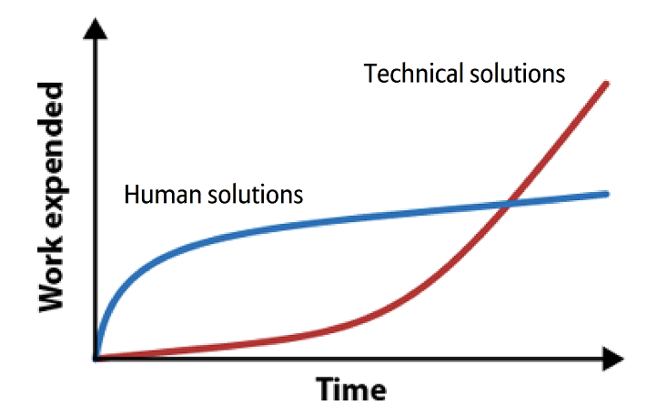

Il s’agit d’un extrait de la formation. Cette formation peut se faire en présentiel ou à distance. Pour en savoir plus, merci de me contacter.
Le principe de géocodage consiste à en réalité à normaliser les adresses.
A titre d’exemple, je remets un article que j’avais rédigé sur la gestion des fautes d’orthographe.
Les data scientists doivent 80% de leur temps à nettoyer leurs données. Les causes de la mauvaise qualité des données sont multiples. Quand la saisie est libre, les erreurs d’orthographe sont fréquentes. La correction de ces erreurs peut être consommatrice du temps. Le premier réflexe est souvent de repérer les erreurs commises et corriger. Si pour une petite quantité d’erreurs, il semble rapide de corriger à la main, il n’est pas viable de le faire pour une grande quantité de donnée. Ainsi, il est souvent préférable d’adopter une solution automatisée dès que possible.

1 Principe
1.1 Distance des mots
Prenons l’exemple des adresses non normalisées: on peut écrire “bld” pour “boulevard”. On peut repérer tous les “bld” et les corriger. Mais le problème, c’est que certains écrivent “blvd”. Puis pour “avenue”, on peut trouver “av”, “ave”, “aven”, “avenu” et d’autres erreurs grossières.
On peut calculer la distance entre deux mots. Une façon de compter peut être la suivante:
On compte le nombre de lettres dans chaque mot.
Si le nombre de lettres pour une lettre donnée est identique, la différence est de 0. Si le nombre est différent, on prend la valeur absolue de la différence.
A la fin, on additionne le nombre de différences.
Par exemple,
entre “rue” et “avenue”, on a une distance de 5
entre “boulevard” et “bld”, on a une distance de 6
1.2 Correction
Pour automatiser la correction, on peut procéder aux étapes suivantes:
On doit d’abord avoir les types de voies normalisées, par exemple “avenue, rue, boulevard”.
Pour chaque type de voie observé, on peut calculer la distance avec les types normalisés. Pour “av”, on aura donc “4, 5, 7”.
On prend le minimum, et ici, on obtient bien “avenue”.
1.3 Types de distance
Imaginons le cas suivant:
Dans ma base, j’ai deux rues
“rue Victor Hugo” et
“rue Hugo Viktor”
Quelqu’un écrit “rue Viktor Hugo” et on suppose qu’il s’est trompé sur la lettre “k” (si ce cas vous apparait ambigu, vous pouvez toujours imaginer un autre cas où l’ordre est important).
Si on calcule la distance comme précédent, on aura comme distance par rapport aux données de référence: 2, 0. Du coup, la proche serait “rue Hugo Viktor”, ce qui n’est pas ce qu’on souhaitait.
Pour résoudre le problème, on peut utiliser un autre type de distance: distance Levenshtein, et on aura 1, 10.
On voit que selon les cas, on peut choisir le bon type de distance pour mieux traiter nos erreurs.
2 Clustering
Si on n’a pas des données de référence, on peut faire une segmentation des mots.